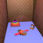
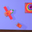
 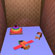
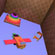
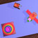
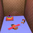
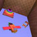
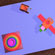
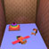
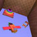
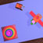
Creating a toy was my favorite project of the semester. This project was completed using 3D X Max. I enjoyed this because it was the project that allowed the most freedom and creativity. I learned how to place, orient, and join objects in an environment. I also learned how to customize shadows including there brightness and definition. I created three toys: a ring stack, a model airplane, and a tiny car. I placed the objects on a blue background surrounded by some Victorian wallpaper that makes it feel a bit claustrophobic. I like the colors I chose for the ring-stack, but I think I could have improved on the colors of the other two toys.
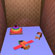
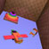
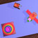